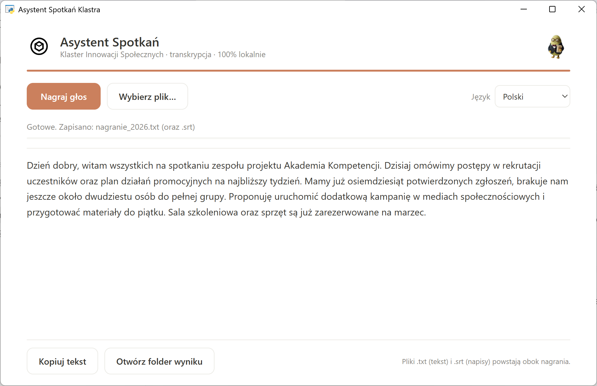

Klaster Innowacji Społecznych udostępnia organizacjom pozarządowym darmowe narzędzie oparte na sztucznej inteligencji, które zamienia nagrania spotkań w gotowy tekst — w całości na komputerze użytkownika, bez internetu i bez wysyłania danych do chmury. To nasz konkretny wkład w odpowiedzialny rozwój AI w trzecim sektorze.

Zebrania zespołu, rozmowy z uczestnikami projektów, spotkania partnerskie, posiedzenia zarządu. W organizacjach społecznych spotkań jest dużo, a po każdym z nich ktoś musi spisać ustalenia. To godziny pracy, które mogłyby trafić do działań na rzecz misji, a nie do przepisywania nagrań.
Z drugiej strony coraz więcej narzędzi AI do transkrypcji wymaga wysyłania nagrań do chmury. Dla trzeciego sektora to realny problem: rozmowy często dotyczą danych wrażliwych — beneficjentów, podopiecznych, spraw socjalnych. Wysyłanie takich nagrań na zewnętrzne serwery rodzi pytania o prywatność i zgodność z RODO.
Dlatego stworzyliśmy Asystent Spotkań — prostą aplikację, która nagranie rozmowy zamienia w tekst (.txt) i napisy (.srt). Kluczowa różnica: wszystko dzieje się na komputerze użytkownika. Bez konta, bez internetu, bez wysyłania danych gdziekolwiek.
Narzędzie jest lekkie i dostępne dla każdego — działa na zwykłym komputerze z systemem Windows, nie wymaga karty graficznej ani drogiego sprzętu. I jest całkowicie darmowe.
Wierzymy, że narzędzia AI powinny być dobrem wspólnym, a nie przywilejem największych. Dlatego Asystent Spotkań jest otwarty (open source) i dostępny bezpłatnie dla każdej organizacji, która chce z niego korzystać — można go pobrać i zainstalować samodzielnie.
To część szerszej misji Klastra: demokratyzacja sztucznej inteligencji w trzecim sektorze. Pokazujemy, że odpowiedzialna AI — prywatna, lokalna i darmowa — jest dziś w zasięgu każdej organizacji społecznej.
Dla każdej organizacji. Bez kosztów, bez chmury.
To kolejny krok Klastra Innowacji Społecznych w stronę praktycznego, odpowiedzialnego wykorzystania AI dla dobra wspólnego.